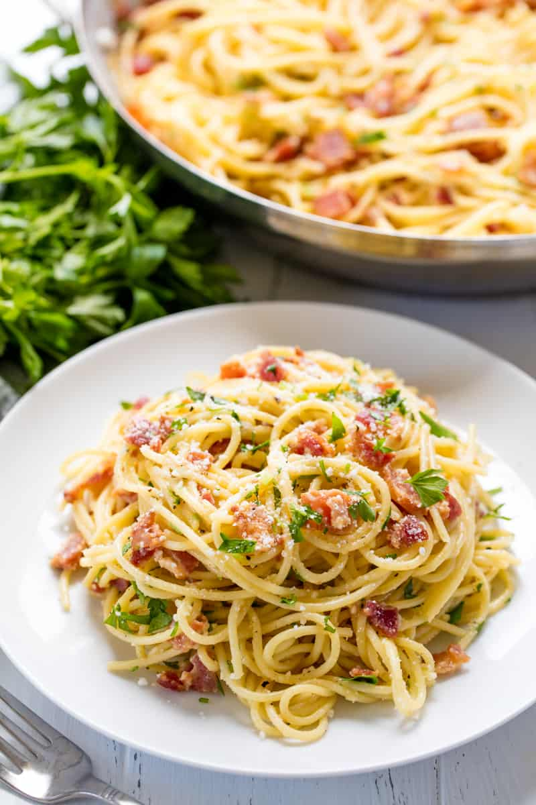

Pasta Carbonara

Description
Spaghetti alla carbonara. Luscious and wonderfully indulgent, pasta carbonara takes as long to make as it does to cook the pasta.
The ingredients are simple—just spaghetti (or another long pasta), and the carbonara is made with pancetta or bacon, eggs, Parmesan, a little olive oil, salt and pepper.
Ingredients
- 1 tablespoon extra virgin olive oil or unsalted butter
- 1/2 pound pancetta or thick cut bacon, diced
- 1-2 garlic cloves, minced, about 1 teaspoon (optional)
- 3-4 whole eggs
- 1 cup grated Parmesan or pecorino cheese
- 1 pound spaghetti (or bucatini or fettuccine)
- Salt and black pepper to taste
Steps
- Put a large pot of salted water on to boil (1 tablespoon salt for every 2 quarts of water.)
- While the water is coming to a boil, heat the olive oil or butter in a large sauté pan over medium heat. Add the bacon or pancetta and cook slowly until crispy.
- Add the garlic (if using) and cook another minute, then turn off the heat and put the pancetta and garlic into a large bowl.
- In a small bowl, beat the eggs and mix in about half of the cheese.
- Once the water has reached a rolling boil, add the dry pasta, and cook, uncovered, at a rolling boil.
- When the pasta is al dente (still a little firm, not mushy), use tongs to move it to the bowl with the bacon and garlic. Let it be dripping wet. Reserve some of the pasta water.
- Add the beaten eggs with cheese and toss quickly to combine once more. Add salt to taste. Add some pasta water back to the pasta to keep it from drying out.
- Serve at once with the rest of the parmesan and freshly ground black pepper. If you want, sprinkle with a little fresh chopped parsley.